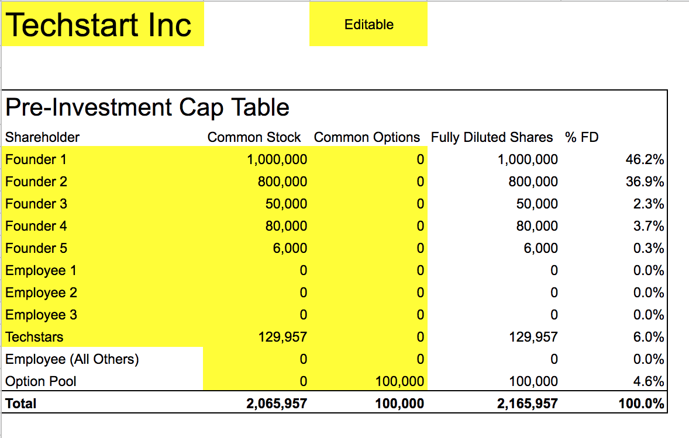
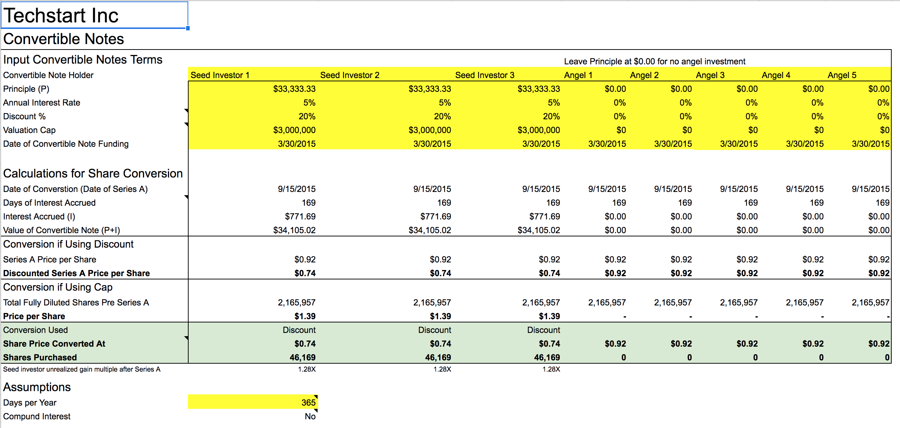
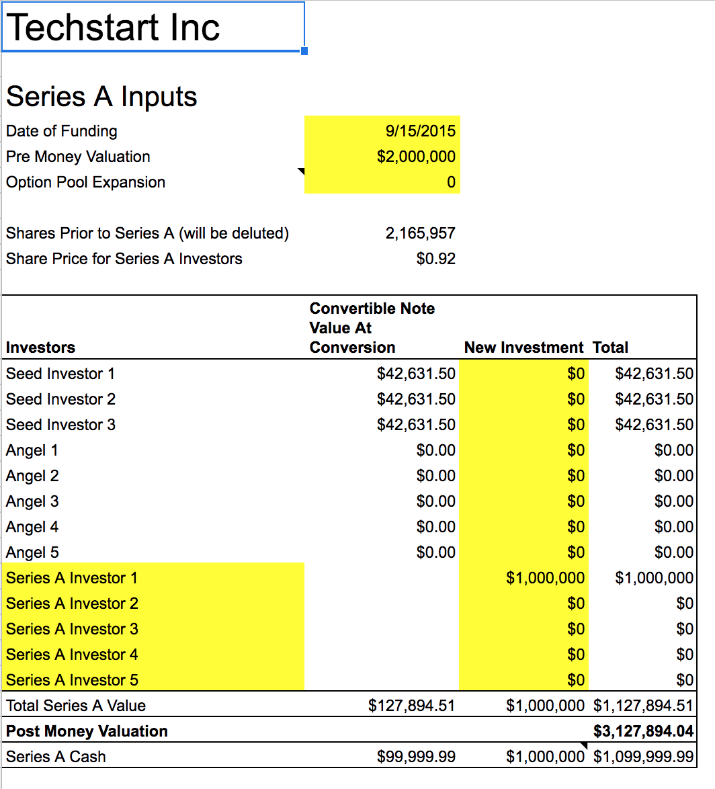
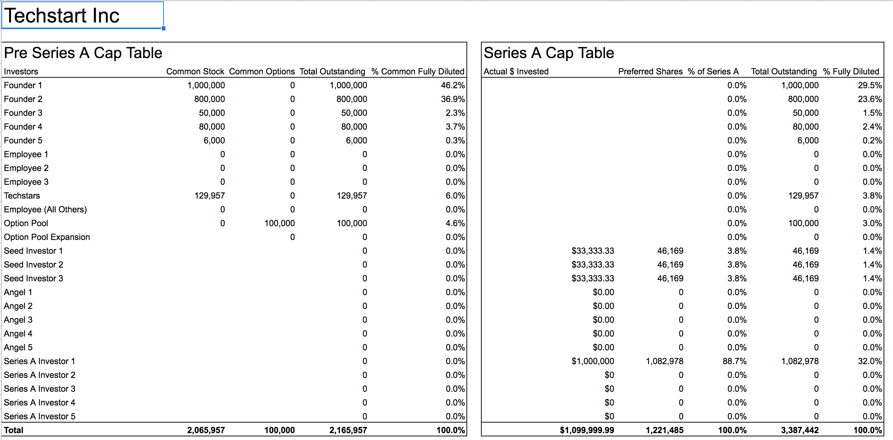

Convertible notes and SAFEs are great because they allow startups and investors to defer the difficult process of valuing an early stage company and quickly close funding. This is at the cost of putting the burden on later investors determine the value of the company, generally, once the company has more metrics to base a valuation on. With the convertible note holders getting some type of discount for investing early. If you want to read more about the mechanics of convertible notes I recommend Brad Feld's series of blog posts -> read here.
I've been involved with a number of companies who have raised multiple rounds of convertible note financings, without really understanding how all the rounds will convert when a priced round occurs. Over time I have developed a generic Google Sheet template which given a cap table and convertible note terms calculates Series A conversion scenarios providing insight on how everything will play out.
To access the template - > Click Here and go to File -> Download As an excel copy. From there you can re-upload the file to your own Google Drive.

In the first tab 'Pre-Investment Cap Table' add your current cap table. Usually only contains founders and maybe some early employees.

The tab 'Convertible Notes' is where you input your convertible notes. It is ok to leave either cap or discount blank. SAFE's can also be input in this sheet, they are functionally equivariant to convertible notes. Inputting multiple rounds of convertible notes here is also ok, just add them with different dates and terms.

The next tab 'Series A Inputs' is where you input a Series A scenario based on the pre-money valuation and round size. This sheet also allows you to calculate an employee option pool expansion concurrent with the Series A fundraising (this is common).

The final tab 'Series A Cap Table' shows both pre and post Series A cap tables side by side. Showing the effect of the convertible notes on the final cap table.
If you find this sheet valuable, please leave a comment. I am happy to take suggestions or discuss unique fundraising scenarios that don't fit in this template.